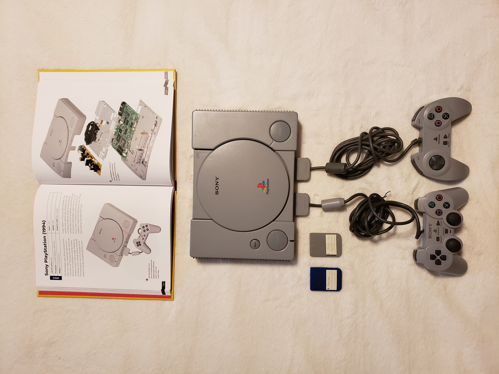

Today is the 26th Anniversary of Doom. I feel old thinking about it. Anyway, I was first introduced to Doom in the summer of '95. A relative of mine had an i486 computer (don't know the make) and he had plenty of MS-DOS games in his collection. One of them being Doom. On the screen, as soon as he typed commands "dir" and "doom.exe", I'm in for a real treat. I was in awe on the graphics and how violent it is. After progressing through the first episode, I asked my relative if we can play the next episode. He agreed and that's when I was first introduced to the BFG9000. The largest gun that can wipe almost every monster of the screen. If I can recall, there was a room filled with demons and imps. He fired a few blasts from the BFG9000 and next thing I know, the game crashed. We restarted the computer and played "Warcraft: Orcs and Humans" instead. 2 years passed and I was able to get my hands on the Shareware version and played it on my dad's Packard Bell PC running on Windows 95. I've been hooked ever since.
Doom is the game I'll never get bored of. It's gameplay is simple. Straight to the action, no storyline, and no NPCs. All it is, you're a space marine trapped on Phobos (one of Mars' moons) and your goal is to fight through enemies and find the exit. The arsenal that Doomguy (yes, that's his name) carries is basic. You got your fist, chainsaw, pistol, shotgun, chaingun, rocket launcher, plasma gun, and iconic BFG9000 (aka the BIG F***ING GUN). Level design can range from simple to challenging. Some parts can be quite puzzling such as finding a switch to move a platform up to reach the exit or finding a specific colored key to open a door to an exit or a special weapon. Also, these levels have secrets that reach to power ups, special weapons, or even a secret level.
All in all, Doom still holds up today. The community behind it runs strong. This is due to them designing their own levels or ".wad" files. And since id Software's co-founder John Carmack released the source code to the public, people can port it to high-end PCs and consoles. Check out ZDoom if you're curious. Doom is now available in numerous platforms.

The original Playstation released in December 3, 1994
12/03/2019
25 Years of Play
As stated on Playstation's blog, today is Sony's Playstation 25th anniversary. This is one of my favorite consoles while growing up. I have to thank my cousin for introducing me to this console in the mid '90s. I'll always swing by to my cousin's house every weekend to game on the Playstation (The PS1 as what most people call it). This console got me immersed into the 3D graphic gaming "genre" in general. I say that because I was so use to playing on my NES and Super NES which are both 2D consoles. Sure, Doom was my first experience on "3D" (sort of), but seeing 3D graphics rendered in console was totally new to me at the time. If I can recall, the first game my cousin introduced me to was the first "Tekken". We played for hours on end. Throughout that same year, my cousin would purchase a new game from Funcoland (remember that store?) and we would play them all night long. One of those games being "Jumping Flash". Both of us would take turns on beating a level. Oh, and I remembered that "Die Hard: Trilogy". That was when we use the Playstation's Namco light gun peripheral. I can sit here all day talking about the games I played on the original Playstation, but one that stood out of the rest was the first Resident Evil. That game gave me nightmares. I watched my cousin play all night and get immersed in to this fantastic (and corny dialogued) survival-horror game.
Fast-forward to my senior year in high school, I was able to acquire the original Playstation from my uncle. Why so late on getting one? I never had a Playstation as a kid and like I mentioned, I only played it at my cousin's place. At this time, the Playstation 2 was the most popular console and the Playstation 3 was just announced in E3 of that year. At this time, I played catch up and was able to play all the classic original Playstation games such as, Gran Turismo 2, Resident Evil, Megaman Legends 2, and Final Fantasy 8 & 9 to name a few. As I approach my early college years, I started save up some money and buy and collect Playstation games. Eventually, I bought a Playstation 2 and got hooked on since.
How does the original Playstation hold up? Personally, I think the original Playstation holds up pretty well. The nostalgia feel runs strong within me every time the Playstation is brought up. I am still collecting and playing PS1 games to this day. My connection with the console will never fade.
The Official Guide: Mario Paint for the Super NES.
12/01/2019
Winter Nostalgia: Mario Paint
I've had so much memories playing this game. Mario Paint for the Super NES was a total time killer when I was a kid. I would say that this game topped Kid Pix on the MacOS. I received this game as a Christmas gift from my parents in the early '90s. It came bundled with the Super NES, Super Mario World (another awesome game), a set of controllers, and neat peripheral which is the Super NES Mouse. I wish I kept the box since it's a collector's item but as a kid, it was just packaging so I threw it out. So what can I say about Mario Paint? It's more of an art tool than a game. It let's your sense of creativity unfold. The problem with this "game" was that no one ever talked about it as much. Even during my youthful days in elementary school, no kid ever mentioned it (execpt a few). When it comes to COOL art programs, kids always mention Kid Pix. Sure, Kid Pix is cool but it has its moments. I feel that Kid Pix lacked some features than what Mario Paint has to offer.
What does Mario Paint contain? Well, you got your basic paint program, stamp/icon creator, music composer, an animation tool, and did I mention there's a mini game? I take back what I said about not being a game. The mini game is called "Gnat Attack". Just press that coffee icon on the lower right hand of the screen and you'll be swapping gnats, flies, wasps and the level boss named "King Watinga". I poured so many hours just playing the Gnat Attack game.
Overall, Mario Paint is the most creative and original idea that Nintendo ever created. It's legacy still continues to this day. Many people used Mario Paint's music composer to create or made covers of songs of today. It even laid a foundation for Nintendo's recent games like Super Mario Maker for the Nintendo Wii U and WarioWare D.I.Y. for the Nintendo DS.